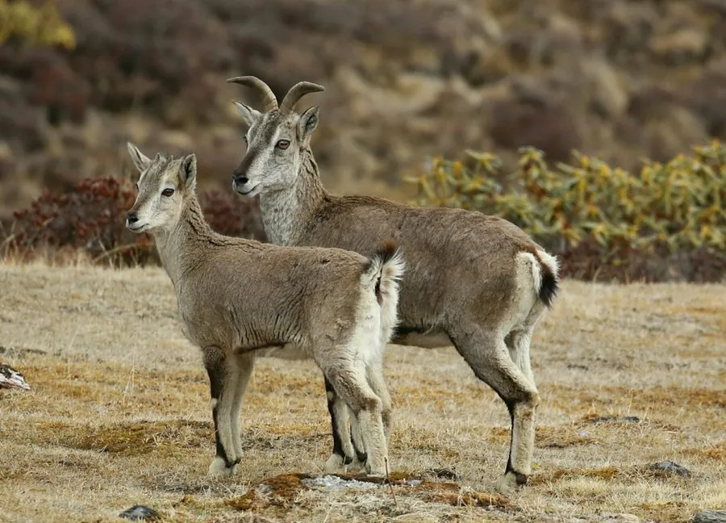

哺乳动物 · 动物界
岩羊 Pseudois nayaur

青藏高原岩壁上的攀爬高手，毛色灰蓝、蹄底长有弹性肉垫，能在陡峭崖壁间跳跃自如，被称为蓝羊。
- 分类
- 门脊索动物门纲哺乳纲目偶蹄目科牛科属岩羊属
- 栖息环境
- 海拔 3000–6000 米的裸岩、高山草甸与灌丛
- 地理分布
- 青藏高原及周边高山，中国西部和西南部多个省区有分布
- 保护级别
- IUCN 无危（LC）；中国国家二级保护动物
物种志
岩羊体长 1.1–1.7 米，肩高 0.7–0.9 米，体重 35–80 kg，雄性明显大于雌性。它的被毛为灰蓝色至石板灰色，腹部和四肢内侧较浅，雄羊从喉部到胸部有黑色纵纹；雄羊长有向后弯曲的角，角长约 35–80 cm，雌羊角短小。
岩羊分布于青藏高原及周边高山，从中国西藏、青海、新疆、四川、云南到尼泊尔、印度、不丹，栖息于海拔 3000–6000 米的裸岩、高山草甸和灌丛。它是攀岩高手，蹄底有柔软的弹性肉垫，脚趾可分开增加抓地力，能在陡峭岩壁上跳跃移动，主食禾草、苔草和灌木嫩叶。岩羊结成数只至上百只的群体，多在晨昏取食，白天在岩壁阴影处休息；雌兽妊娠期约 160 天，每胎 1 仔。岩羊是雪豹、狼等捕食者的重要猎物，种群总体稳定，中国将其列为国家二级保护动物。
形态与习性
- 食性禾草、苔草与灌木嫩叶
- 体长1.1–1.7 m，肩高 0.7–0.9 m
- 体重35–80 kg，雄性明显大于雌性
- 寿命野外约 10–15 年
- 繁殖妊娠期约 160 天，每胎 1 仔
- 角雄羊角向后弯曲，长约 35–80 cm
- 攀岩蹄底有弹性肉垫，能在陡峭岩壁跳跃
趣味知识
- 岩羊毛色灰蓝，因此又被称为“蓝羊”。
- 它的蹄底有柔软肉垫，能在陡峭岩壁上稳稳站立。
- 岩羊是雪豹最主要的猎物之一，但种群数量总体稳定。
- 雄羊的角向后弯曲，雌羊的角则短小得多。
生态关系
- 捕食 ← 雪豹 雪豹最典型的猎物